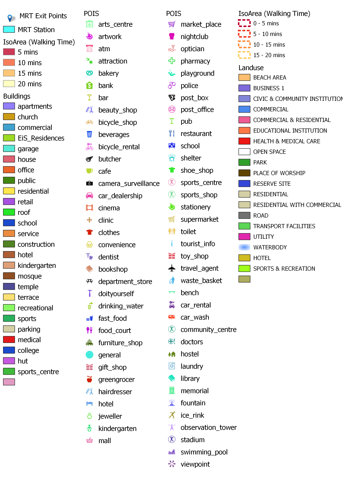

Analysis
Catchment area analysis of Thomson East Coast Line TE23 to TE29
Legends:

TE23:

Disclaimer: the area may vary greatly depending on how fast or slow a person cycles.
Tanjong Rhu MRT station mostly serves the areas around Kallang Stadium. It is around 650m away from Stadium MRT, thus the areas within walking distance may overlap with one another. Majority of the areas are filled with sports activities and it is around 15-20 minutes walk away from the Marina Bay Golf Course. In the future, there are plans to build more residential infrastructure. However, the number of residents it serves is relatively smaller than other MRT stations. The main target group this MRT aims to provide for is athletes.
With this target audience, it may be inferred that there could be less human traffic during the weekdays since not many would have the time to use ports facilities in their day-to-day lives. Therefore, it might only be highly-utilised during big events such as concerts at the stadium or sports competitions. It caters to a much smaller number of residents than other MRT stations on the Thomson-East Coast line. From the map we can see only one or two residential estates that are within 5-10 minutes walk from the MRT station. Additionally, these estates are condominiums, which means the residents are highly likely to have a middle to high socio-economic status and are more likely to have private vehicles. This decreases the usage of the MRT even more on normal days.
TE24:

High-rise condominiums immediately surround Katong Park MRT once its construction is complete in the future. Residents around the area will be able to travel to other parts of the island, with the residences all within a 10 minute walk away from the station. The reserve site towards the south of the station consists of the Marina East Staging Ground, a land reclamation site in which there could potentially be more residential buildings being built in the future.
This MRT is one of the closest walking distance to East Coast Park of about 5-10 minutes. This makes East Coast Park much more accessible than the transport options that are available now. This might encourage people to travel to East Coast Park without private vehicles, especially for students. However, it should be noted that this MRT is actually close to multiple other stations such as Stadium, Dakota and Mountbatten. It may seem like there is an oversupply of station in this area and perhaps more planning should be put in to make sure all resources are put to use efficiently.
TE25:

The area surrounding Tanjong Katong MRT follows a similar pattern to the area surrounding Katong Park, with a few blocks of luxury condominiums situated between 0-10 minutes walk away from the MRT. Primarily being a residential neighbourhood, it is characterised by the landed houses and HDB blocks that are situated in the west and condominium blocks towards the east. Residents in the area can enjoy shorter travelling times to the city with the implementation of this MRT station, and potentially benefiting commercial activity within the area. Restaurants are in plentiful supply in this region, and they can be reached within 10-15 minutes walk away from the station. The neighbourhood of Tanjong Katong is also characterised by the educational institutions there are available, with Tanjong Katong Primary, Tanjong Katong Secondary & Tanjong Katong Girl’s all within 10-15 minutes walk away, benefiting the students who do not reside near these areas. For youths who are looking for places to have fun, Coastal Playgrove is south of the MRT station and is just a 10-minute walk away.
MRT usage is expected to increase around this area where the main mode of transportation is by bus, as per data from Singstat, which definitely could offer residents a more direct route either towards the direction of Changi Airport or towards the city centre.
TE26: 
The bustling residential estate of Marine Parade is dominated by landed houses, HDBs and shophouses. It is a popular destination for people wanting to visit East Coast Park in the south. Current & future residents of Marine Parade are able to enjoy shorter travelling times, with the MRT station being a 5-10 minutes walk away from their homes. More importantly, in terms of convenience, economic activity around the area will be expected to receive a big boost, with a great number of commercial buildings reachable within 10 minutes of the MRT station.
This MRT station is one of the stations in the stage 4 of the Thomson-East Coast line that accommodates the most residents. There are many residents that can access the station from 5 minutes walk all the way up to 20 minutes walk. This would make the station one of the ones with higher human traffic even on a normal day as many residents would need to use the transportation to commute to work and school etc.
TE27:

From the maps, it seems like Marine Terrace caters to the most number of people, with the majority of the population residing in the area living in HDBs. MRTs that are built near to HDB estates are usually used pretty often as the people use the MRT for their daily commutes to work, school etc. The MRT is also within walking distance within multiple schools, which shows that one of its target audience is also the children living there, to make their travel a bit more convenient. The MRT also has an underground bicycle parking and thus would be helpful for people staying 15 minutes or more away from the MRT and prefer to cycle. Marine Parade caters to commuters mostly in the Marine Parade and Frankel subzone, which has a total population of around 61,370 people.
However, it is good to note that TE26 and TE27 are distanced pretty close from each other and thus the iso-areas overlap one another at some areas. This may make it counterproductive as now the residents have too many choices for MRT on the same line and would not value-add much to their travelling time. On the other hand, there are still some areas where residents are unable to enjoy the MRT or it is more than 15 minutes walk away from them, which makes it inconvenient for them to commute.
TE28: 
The land use map for Siglap shows predominantly low rise buildings, schools and East coast park to the South. As seen from the map, the colour coding of grey represents the residential areas, and based on Google street view, most of them are landed properties. In addition, the orange highlighted buildings represent schools, signifying that one of our main target users of this MRT are students and school children similar to the other MRTs along Thomson East coast. However, 15 to 20 mins walking distance away from MRT in the catchment area signified in the yellow jagged line overlaps with the catchment area of Bedok MRT. Bedok is situated to the North West of Siglap, and there are some HDBs in the area.
According to Citypopulation there are only 6,440 people living in Siglap which is relatively smaller compared to Bedok’s population which is the planning area of Siglap.
Since, majority of the land use are low rise landed properties, and taking into account their socio-economic profile of the people living in the area skewing towards the wealthier side, the target audience taking the MRT may be smaller than envisioned.
TE29:

The Bayshore area mostly comprises landed houses, shophouses and medium to high-rise buildings such as apartments and community centers. Most of these residences can be reached within a 10 minutes walk. In the future, the forested area to the east of the MRT station will be cleared off for future projects, which includes a new lifestyle waterfront urban village which can house around 12000 public & private houses, and will be all within 5-10 minutes walk away from the MRT station.
This MRT station also is in close proximity to East Coast Park and it might be a good addition compared to Katong Park MRT since they can serve different sides of East Coast Park as it is a very big park and it can be accessible to people coming from all directions. Bedok being one of the densest populated subzones in Singapore, therefore building more MRT stations in the area would be a good addition to the residents and provide great convenience. Additionally, there are recreational activities that can be accessible from this station such as fishing at Bedok Jetty, hence it can be beneficial for avid fishers as well.
Analysis on Cycling Paths to & from TE25 and TE28
Apart from our analysis on walking paths, we have also decided to include our analysis on cycling paths, and the overall time needed to get to the MRT stations from different places. We have decided to include these analyses on the back of cycling’s growing popularity in Singapore and LTA’s intention to encourage it as a viable option for first and last-mile commutes.
The analysis that we will be doing is based on iso-areas of maximum 10 mins cycling time, and we segregated the iso-area into 2 intervals: the inner area delineates cycling time of 0-5 minutes and the outer area delineates cycling time of 5-10 minutes. We also set the cycling speed at 16 km/h, which is based on an estimation gathered from multiple sources.
.png)
Disclaimer: the area may vary greatly depending on how fast or slow a person cycles.
One glance at the maps and they would tell a similar story: if one is able to cycle, then they would find great convenience, both in terms of commuting from the MRT station as well as returning home from the MRT station. A large swathe of residential buildings can be reached well within 5 minutes of the MRT station. If we analyse the MP19 land use map on the right, educational institutions (such as Tanjong Katong Primary & Secondary) can also be reached within 5 minutes as well, down from the previous 15 minutes needed if one were to walk to these institutions. Apart from these benefits, cyclists who wish to go to east coast park in the south can also find it very convenient to hang out there as it is only 5 minutes cycling time away as well. Given that a large area covering this map consists of landed houses, it will be easier for people to return home and park their bikes, saving the need to transport their bikes up and down a HDB block.
One downside of this is that we do not have information on how many bike spaces are available for cyclists to park their bikes at these MRT stations, hence it is impossible to know how many people it could benefit. It could potentially be a hindrance for cyclists as well if it transpires that there are not enough bike spaces for cyclists to park their bikes. As a consequence, they may be forced to carry their bikes wherever they go or search for an alternative parking spot.
-02.png)
If there’s ever one map that could encourage workers and employees to cycle more in Siglap, then this map could help them: commercial and business buildings in this area (marked as purple in the map on the right) are all located within 10 minutes cycling time away from Siglap MRT station. It could save them valuable time in their first and last-mile journeys from the MRT to their workplace, and it could also encourage employees who drive to work often to switch to cycling.
Places that needed 20 minutes walking time to reach from MRT station (e.g. Temasek JC, restaurants, cafes, etc) can be reached within 5 minutes by cycling, highlighting the time that can be saved if one cycles to their destination in this area.